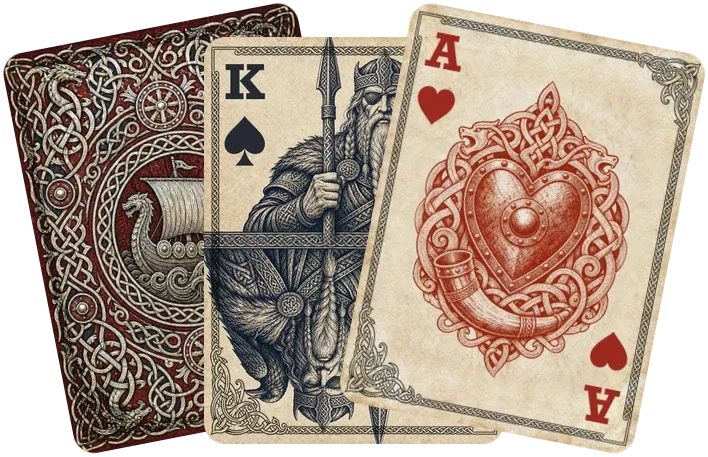
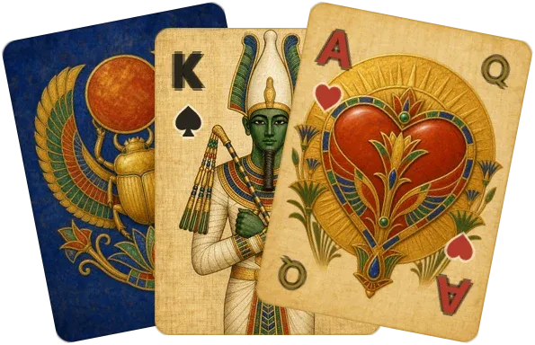
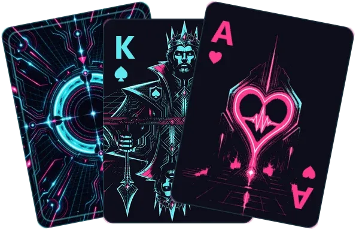

Felt House
Le jeu maison, celui que Cardz distribue tant que vous n'en choisissez pas un autre. Figures, As et jokers imprimés au portrait français, chiffres à empattements sur les cartes numérotées, et un dos en filigrane de laiton.
Cartes
Changez quand vous voulez, même en pleine partie.
Le jeu maison, celui que Cardz distribue tant que vous n'en choisissez pas un autre. Figures, As et jokers imprimés au portrait français, chiffres à empattements sur les cartes numérotées, et un dos en filigrane de laiton.

Un jeu nordique gravé sur bois, aux figures à deux têtes. Les deux jokers Loki valent la peine d'être trouvés.

L'Égypte ancienne sur papyrus. Un petit cartouche doré à côté de chaque index montre le rang qui fait treize avec cette carte : une bonne partie de Pyramid résolue du coin de l'œil.

Des dieux peints sur marbre, avec un index doré posé sur la plaque.

Un herbier de planches à l'encre et à l'aquarelle, où les quatre couleurs sont quatre familles de plantes — rose, souci, trèfle, chardon — sur une table d'un vert botanique profond.

Gravé à l'encre vermillon et à l'encre ferro-gallique, le rouge et le noir classiques, sur un sous-main de cuir expresso.

Une fine ornementation victorienne sur une table damassée. Le premier jeu illustré livré avec Cardz.
Illustrations de Nicu Buculei, tirées de son jeu ornemental sur OpenClipart. Placées dans le domaine public (CC0 1.0).

Un jeu spatial : cartes bleu nuit, enseignes en orbite, figures célestes, et quatre couleurs d'enseigne au lieu des deux habituelles.

Une salle d'arcade à minuit. Des cartes presque noires éclairées de cyan et de magenta, aux figures à deux têtes lumineuses. L'enseigne au-dessus de la table bourdonne et clignote pendant que vous jouez.

L'horreur gothique en noir de suie, cramoisi de sang séché et cendre d'os, avec des portraits de figures en miroir et des As en reliquaires. La table est une pierre d'autel éclairée par une bougie qui vacille sous les cartes.

Un jeu d'Halloween des années 80 sur une cassette vidéo usée : des illustrations de jaquettes de films d'horreur, les rouges en magenta vif et les noirs en vert slime, chaque As sur un téléviseur hanté, et deux jokers zombies. Des lignes de balayage et une barre de tracking courent sur toute la table. Désactivez les effets de table et la cassette se met en pause.

Des formes en papier découpé, en deux encres, sur une table sombre : des enseignes en bâtons, et des figures réduites à une couronne, un globe et une lame.

Les voyages en avion du milieu du siècle, façon affiche de compagnie aérienne ensoleillée. Les figures sont l'équipage, chaque As est un avion qui trace son enseigne dans le ciel, les jokers voyagent en standby, et les dos sont des cartes de lignes en bleu marine et orange.

Orange signal et noir sur un carton blanc os. Chaque carte affiche son rang en énorme, avec des barres de comptage sur les cartes numérotées et des As inondés de leur couleur, sur une table de pierre pâle.
Cardz propose aussi un jeu à contraste élevé, qui suit votre réglage Windows, et un jeu pour daltoniens avec les cœurs et les carreaux en bleu face aux piques et aux trèfles en noir.
Les jeux de cartes à télécharger peuvent être partagés et modifiés pour un usage non commercial, selon les termes de la licence CC BY-NC 4.0.